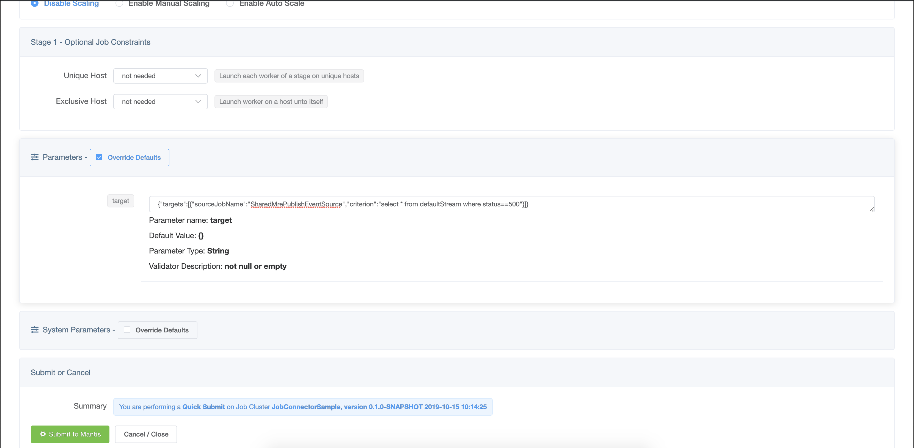
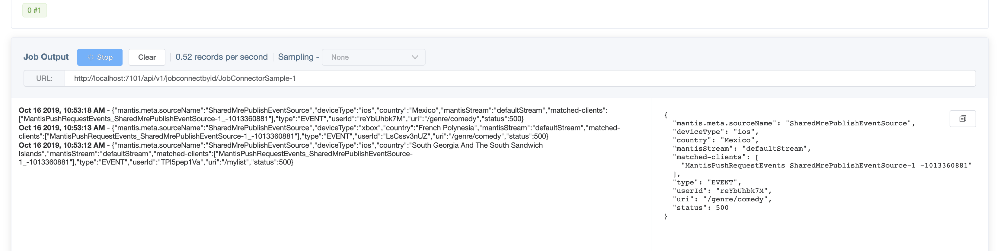

On-Demand
One of the key features of Mantis is the ability to stream filtered events on-demand from external applications.
In this example we walk through publishing data to Mantis from a simple Java application using the mantis-publish library. Followed by setting up a Data Source Job that will act as a broker and a simple Mantis Job that when launched will trigger on-demand streaming of data matching a certain criterion.
This end-to-end example highlights two powerful Mantis concepts
-
On demand streaming of filtered data from external applications directly into Mantis
-
Job Chaining where one Job connects to the output of another job.
Prerequisites¶
SharedMrePublishEventSourceJob Cluster exists.JobConnectorSampleJob cluster exists- Java Sample is setup and running.
Note If you are following the Mantis Cluster using Docker instructions all of this will be already set up.
Publishing events into Mantis¶
Note: The local docker setup has already preconfigured a simple Java Sample application to publish events to Mantis.
Setting up a Publish Data Source Job¶
A Publish Source Job is a special kind of a Mantis Job that interacts with the mantis-publish library
on behalf of a downstream job to push subscriptions up to the mantis-publish library and receive events
matching the subscription from the mantis-publish library.
Submit the SharedMrePublishEventSource¶
Part of the docker setup we have preconfigured the SharedMrePublishEventSource cluster. So all we have
to do is submit an instance of it.
-
Go to the clusters page and click on
SharedMrePublishEventSource -
Click
submiton the top right corner of the screen
-
This will open up the Job Detail page. Now wait for the Job to go into
Launchedstate
You are all set. Now the Java application referenced in the previous section should be able to communicate with this source job to exchange subscriptions and data.
At this point however there are no active subscriptions so no data is actually being sent out from our Java application. If you look at the shell window where the docker is running you should see output like
mantispublish_1 | 2019-10-16 17:55:46 INFO SampleDataPublisher:56 - Mantis publish JavaApp send event status => SKIPPED_NO_SUBSCRIPTIONS(PRECONDITION_FAILED)
Next step. Launch a new job to query for Data generated by the Java application.
Query data generated by the Java application.¶
Our Java application generates a stream of Events representing requests made to it by an external client.
Say we want to look at all events that are failing i.e have status=500
Submit a query job¶
Now we launch a simple Mantis Job to query data generated by our Java Application.
-
Go to clusters page and click on
JobConnectorSample -
Click the green
submitbutton on the top right corner of the screen. -
On the Job submit page scroll down and click on
Override Defaultsto configure our query.
Enter the following as the value for parameter target
json
{"targets":[{"sourceJobName":"SharedMrePublishEventSource","criterion":"select * from defaultStream where status==500"}]}
and hit submit.

Two key things to note:
- We set the
sourceJobNametoSharedMrePublishEventSourcewhich is the source job we configured in the previous step. - We set the
criterionkey in the payload to our MQL queryselect * from defaultStream where status==500
Click on Submit.
On the Job Detail page scroll down to the Job Output section and click on Start.
In a few seconds you should see events matching our query flow through.

If you go back to the shell that is running the docker images you should now see output like
mantispublish_1 | 2019-10-16 17:58:32 INFO SampleDataPublisher:56 - Mantis publish JavaApp send event status => ENQUEUED(SENDING)
If we now terminate our JobConnector Job, then our Java application will again revert to not sending
any data.
Take aways¶
By integrating the mantis-publish library with their applications, users can get access to rich data generated by their applications in realtime and in a cost-effective manner for analysis into their jobs.